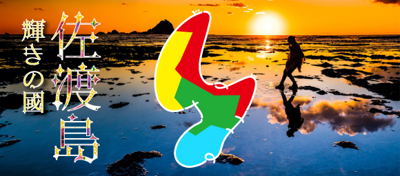
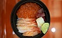
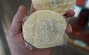
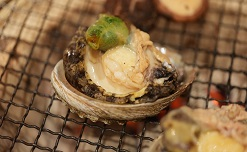
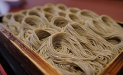
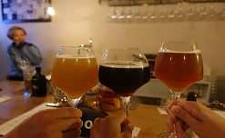
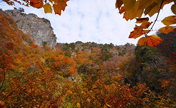

 万畳敷のリフレ
- 今日のおすすめスポット！ 『黄昏の二つ亀』
- 2023.11.16
人気記事ランキング
-
-  1
-
限定のっけ放題盛りはいかが？
おいしいもの
-
- 2
-
棚田に張られた水に生える御神木
フォトスポット
-
-  3
-
連合艦隊総司令官御用達の不思議な酒饅頭
おみや
-
- 4
-
落ち着いた庭園夜景の贅沢ディナー
さどのやど
Golden Tour Schedule
- 初日
07:04 東京駅
とき303号/10号車20DE08:56 新潟駅
タクシーで新潟港へ09:25 新潟港
佐渡汽船 カーフェリー2等客室11:55 両津港
- 12:00 気軽にレンタカー
4泊5日 ¥13120 ※現地払い
- 12:30 蕎麦 茂左衛門 もぜむ
蕎麦セット ¥1300
蕎麦懐石 ¥2500
※予約済み
- 14:25 二ツ亀
- 14:50 大野亀
- 15:30 福助屋旅館
夕朝食 ¥16500 ※現地払い
16:28 夕日（近場）
17:30 夕食（宿）
- 二日目
07:00 朝食（宿）
07:30 チェックアウト
- 09:00 北沢浮遊選鉱場
ロケハン
- 10:00 史跡佐渡金山
2坑道周遊コース ¥1500/人
宗太夫坑 江戸金山絵巻ｺｰｽ 40分
道遊坑 明治官営鉱山ｺｰｽ 40分
- 12:30 北沢Terrace
- 13:30 北沢浮遊選鉱場
ロケハン次第でパスするかも
- 15:00 清水寺
新穂大野の大銀杏含めロケハン
- 16:00 へんじんもっこ
たまとろサラミ他、おつまみゲット！
- 17:00 たびのホテル佐渡
¥8360 ※支払済
17:20 金井バス停
新潟交通佐渡 本線17:36 境バス停
- 17:40 t0ki Brewery
へんじんもっこフード持込
19:31 境バス停
新潟交通佐渡 本線17:47 金井バス停
- 三日目
08:00 チェックアウト
朝食は前日コンビニでゲット- 08:30 佐渡トキ保護センター
隣に佐渡市トキの森公園
トキのテラスにも寄るかも
- 11:00 すしやまるいし
(対抗: 佐渡弁慶 佐渡本店)
- 13:00 ガシマシネマ
映画見ながらカフェタイム
15:00 相川の街並み
相川の時鐘楼、西海岸巡り16:28 夕日（春日崎）
- 17:20 北沢浮遊選鉱場
ライトアップ狙い(17-18)
- 18:30 Hostel Perch
¥10656 ※支払済
18:40 夕食
別々に食べる感じ
- 四日目
08:30 チェックアウト
- 09:30 妙宣寺
五重塔内部特別公開＆寺宝拝観
- 10:30 大膳神社
ついでに佐渡国分寺も
- 11:30 昼食（未定）
- 13:00 たらい舟力屋観光汽船
¥700/人
- 14:00 宿根木の町並み
吉永小百合の足跡
- 15:00 佐渡温泉御宿おぎの湯
¥10900 ※予約済み
- 15:30 沢崎鼻灯台
神子岩、たけのこ岩
万畳敷 ※ウユニ塩湖
- 18:00 Origine (オリジヌ)
¥5000/人 ※予約済み
- 最終日
07:00 Origine (オリジヌ)
¥1000/人 モーニング09:00 チェックアウト
10:20 へんじんもっこ
たまとろサラミ他、お土産ゲット！10:50 気軽にレンタカー
- 11:00 いしはら寿司
かなりおもうまいらしい
- 12:00 maSanicoffee
両津港の中にあるカフェ
12:40 両津港
15:10 新潟港
15:44 新潟駅
17:40 東京駅
新着記事一覧
-
-  おいしいもの
-
冬の味覚到来！海鮮尽くし
2023年11月11日 キーワード1,キーワード2秋から冬へ移ろう季節、しっかり脂を蓄えたお魚にプリプリのアワビはいかが？...続きを読む
-
-  おいしいもの
-
へぎそば、佐渡にもあるんだよ！
2023年11月10日 キーワード1,キーワード2寒い冬に冷たいそばを啜るのもまたオツなもの。新潟と言えばへぎそば。佐渡でも食べられるんですよ。...続きを読む
-
-  おいしいもの
-
クラフトビールも黒い衣装に衣替え
2023年11月1日 キーワード1,キーワード2長かった暑い夏も終わり冬の便りもちらほら。寒い季節には麦の香ばしい風味が豊かな黒ビールがオススメ。...続きを読む
-
-  フォトスポット
-
秋終盤、紅葉狩りも最後のチャンス！
2023年10月28日 キーワード1,キーワード2暖冬で遅れていた色付きもいよいよ佳境に入ってきました。...続きを読む